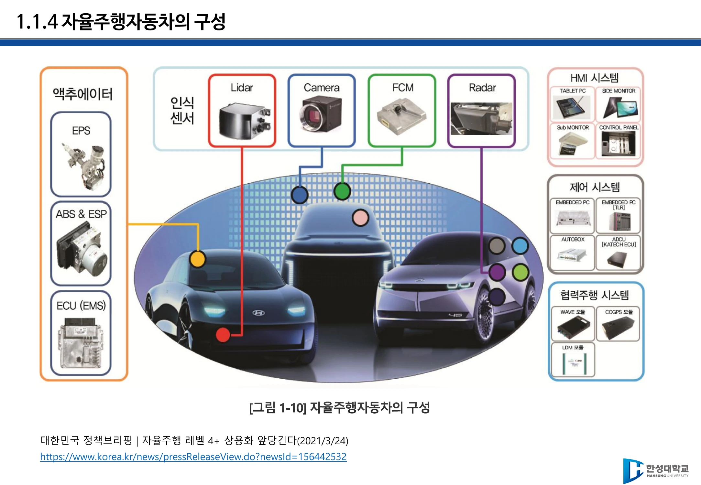
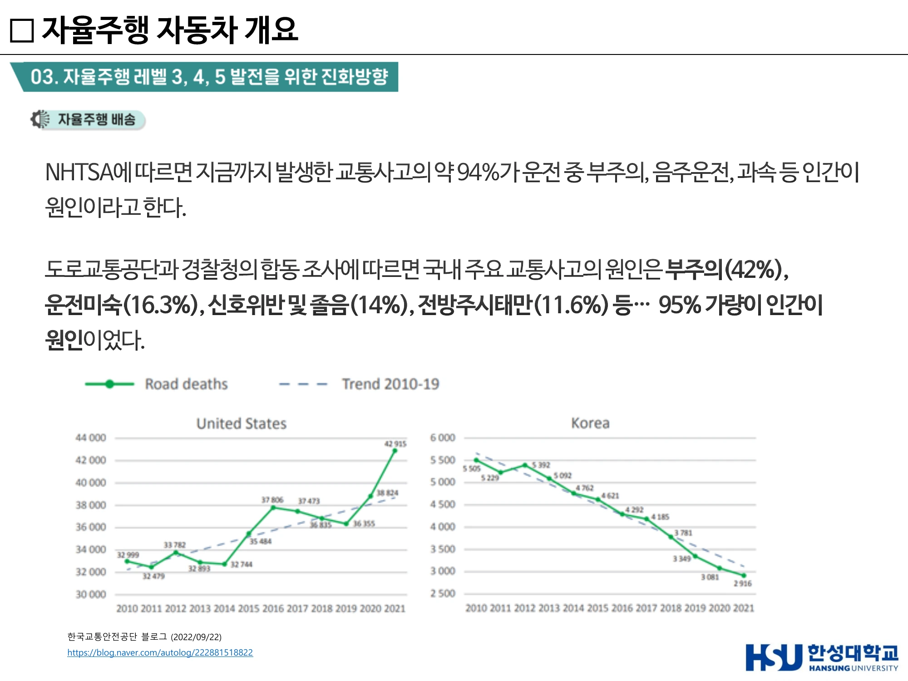
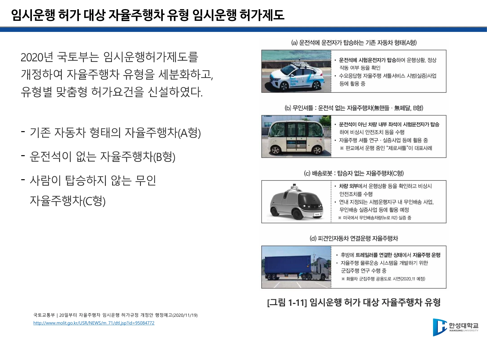
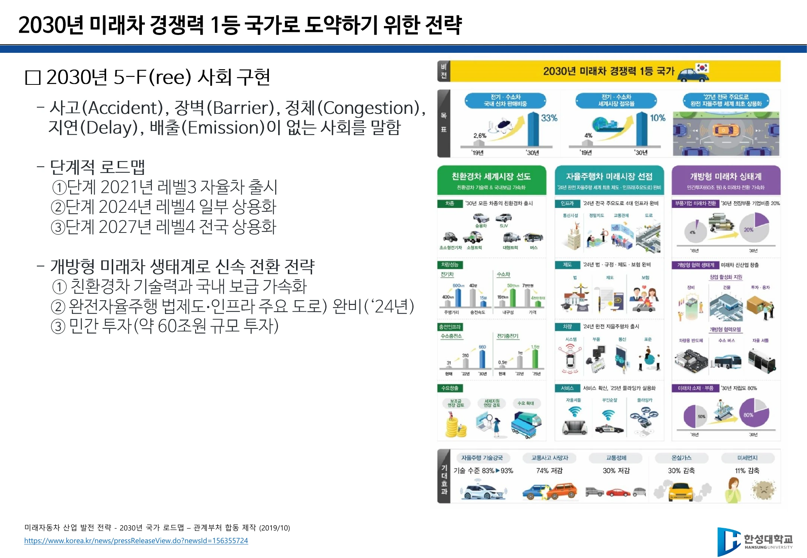

2주차 · 자율주행 개념·레벨·제도¶
🔗 강의 흐름 — 1주차에서 "미래모빌리티 = 기존 운송수단 + 첨단기술"이라 정의했다. 이번 주는 그 첨단기술의 첫 갈래인 자율주행을 용어 수준에서 정확히 세운다. 여기서 잡는 정의와 레벨은 5주차 규제, 7주차 통신까지 계속 쓰인다.
학습목표 — 자율주행자동차와 자율주행시스템을 구분해 정의하고, 자율주행이 필요한 이유를 데이터로 설명하며, 국내 제도(임시운행허가·시범운행지구)와 국가 로드맵을 설명할 수 있다.
💡 기초 다지기 — "자율주행차"와 "자율주행시스템"은 다른 말이다. 차(車)는 물건이고, 시스템은 그 안에서 인지·판단하게 만드는 장비 + 소프트웨어 + 관련 장치 일체다. 법에서도 이 둘을 따로 정의한다.
🗺️ 한눈에 보는 개념도¶
flowchart LR
subgraph 차량
SYS["자율주행시스템<br/>인지·판단 장비 + SW + 장치"]
end
ENV["주변 상황<br/>도로 정보"] --> SYS
SYS --> DRIVE["자율주행자동차<br/>= 조작 없이 운행 가능한 차"]
INFRA["신호기·안전표지·교통시설"] -.협력.-> SYS
DRIVE --> BEN["사고 차단 · 효율 · 이동권"]1. 기본 용어 정의¶
| 용어 | 정의 |
|---|---|
| 자율주행자동차 | 운전자 또는 승객의 조작 없이 스스로 운행이 가능한 자동차 |
| 자율주행시스템 | 주변 상황과 도로 정보 등을 스스로 인지하고 판단하여 자동차를 운행할 수 있게 하는 자동화 장비, 소프트웨어, 그리고 이와 관련한 일체의 장치. 자율주행자동차는 이 시스템을 통해 움직인다 |
| 자율주행 협력 시스템 | 더 폭넓은 관점 — 신호기·안전표지·교통시설 등 환경까지 협업하는 것을 가정한 시스템 |
사용자 경험 관련 용어 (강의에서 함께 정의)
- UI(User Interface) — 사용자와 시스템 사이에 존재하는 접점
- User Interaction — 그 접면을 통해 행하는 상호작용
- UX(User eXperience) — 제품·서비스를 사용하며 하게 되는 모든 경험 → CX(Customer eXperience, 고객 경험) → DX(Digital Transformation, 디지털 전환)으로 확장 중

▲ [그림 1-10] 자율주행자동차의 구성 — 인식센서(Lidar·Camera·FCM·Radar) / 액추에이터(EPS·ABS&ESP·ECU) / 제어·협력주행·HMI 시스템 (출처: 2주차 슬라이드 p22)
2. 자율주행은 왜 필요한가¶
가장 중요한 숫자
NHTSA — 지금까지 발생한 교통사고의 약 94%가 인간이 원인(운전 중 부주의, 음주운전, 과속 등). 국내(도로교통공단·경찰청 합동 조사) — 부주의 42%, 운전미숙 16.3%, 신호위반 및 졸음 14%, 전방주시태만 11.6% → 약 95%가 인적 요인.
- 안전 — 운전 환경의 다양한 변수를 통제하여 교통사고 차단. 전방주시 태만·판단 및 운전 미숙·졸음 등 인적요인 사전 차단
- 효율 — 안정성 및 교통 효율 증가, 교통손실 비용 및 에너지 절감
- 형평 — 운전자 편의성 향상, 교통약자의 이동성 향상
자율주행이 필요한 이유와 핵심 가치는 안전(인적 요인 94%) · 효율(교통손실 비용·에너지) · 접근성(교통약자 이동권) 세 축으로 정리된다.

▲ NHTSA 94% · 국내 약 95%가 인적 요인 — 미국·한국의 교통사고 사망자 추이 그래프 (출처: 5주차 슬라이드(덱 8) p19)
3. 자율주행의 역사 — 세 개의 이정표¶
| 연도 | 사건 |
|---|---|
| 1925 | 라디오 장비 업체 후디나 라디오 컨트롤의 '아메리칸 원더' — 최초의 자율주행 시도. 통신(무선 조종) 기반이었다 |
| 1980년대~ | 카네기멜런대학 로보틱스연구소 Navlab 프로젝트 — 컴퓨터 비전 기반 자율주행. ADAS 기술 발전에 영향 |
| 1990년대 | 미국에서 자율주행 자동차에 대한 본격적인 연구 시작 |
정리 — 자율주행 발전에 관한 세 가지 사실
- 최초의 자율주행 시스템은 통신 기반 기술에서 출발했다
- 자율주행의 급속한 발전은 ADAS 기술의 빠른 발전에 기인한다
- 자율주행 핵심기술은 통신기술 의존도가 매우 높다
4. 자율주행시스템의 연산 성능¶
- 테슬라 FSD(Full Self-Driving) computer — TOPS(Trillion Operation Per Second) 단위로 성능을 표기한다.
- 자세한 프로세서 비교는 6주차에서 다룬다.
5. 우리나라의 제도 ① — 임시운행 허가제도¶
국토부는 민간의 자율주행 기술개발을 지원하기 위해 2016년 2월 자율주행차 임시운행허가제도를 도입했다.
- 신청 시 제출 서류 3종: 시험·연구계획서, 자율주행차의 구조와 기능에 대한 설명서, 안전운행요건 적합 여부 확인에 필요한 서류
- 신청 후 국토교통부장관이 정하는 날짜·장소에 차량을 제시하여 안전운행요건 적합 여부 확인을 받아야 한다.
- 2016년 현대 제네시스가 국내 자율주행차 임시운행 제1호 차 허가.
- 2020년 임시운행 허가 차량이 119대(41개 기관)로 100대를 넘었다.
2020년 개정 — 유형별 맞춤형 허가요건 신설
| 유형 | 내용 |
|---|---|
| A형 | 기존 자동차 형태의 자율주행차 |
| B형 | 운전석이 없는 자율주행차 |
| C형 | 사람이 탑승하지 않는 무인 자율주행차 |

▲ [그림 1-11] 임시운행 허가 대상 자율주행차 유형 — A형(기존 차 형태) / B형(운전석 없음) / C형(무인) (출처: 2주차 슬라이드 p24)
6. 우리나라의 제도 ② — 시범운행지구¶
자율주행자동차 시범운행지구 = 자율주행차의 연구·시범 운행을 촉진하기 위하여 규제 특례가 적용되는 구역.
- 2020년 5월 시행된 자율주행자동차법에 따라 새롭게 도입.
- 1차 6개 지구 지정 후 1개 추가 → 서울 상암·제주 등 7개 지구, 2022년 전국 10개 시·도 14개 지구로 확대 공표.
- 세종·광주 규제자유특구를 통한 서비스 실증과 규제 정비 병행.
- K-City 등 자율주행 테스트베드 고도화, 기업 상주 연구공간 마련.
세종시 자율주행버스 1년 운행 결과 (KBS 보도)
- 이용자의 80%가 "신기하다"며 만족, 70%가 "다시 이용할 의향"
- 다만 자율주행이 2~3단계 수준이라 안전 우려의 목소리
- 어린이보호구역에서는 자율주행이 법으로 금지
- 도로에서는 돌발상황 대비로 운전석에 사람이 타서 최소한의 수동 운행 → 대구 시범지구는 반대로 "이용자 적고 차량 없다"는 보도. 같은 제도라도 운영이 다르면 결과가 다르다.
7. 국가 로드맵 — 2030년 미래차 경쟁력 1등 국가¶
미래자동차 산업 발전 전략 – 2030년 국가 로드맵 (관계부처 합동, 2019.10)
2030년 5-F(ree) 사회 구현
사고(Accident) · 장벽(Barrier) · 정체(Congestion) · 지연(Delay) · 배출(Emission)이 없는 사회 → 머리글자 A·B·C·D·E로 정리된다.
단계적 로드맵
| 단계 | 연도 | 목표 |
|---|---|---|
| ① | 2021 | 레벨3 자율차 출시 |
| ② | 2024 | 레벨4 일부 상용화 + 완전자율주행 법·제도·인프라(주요 도로) 완비 |
| ③ | 2027 | 레벨4 전국 상용화 |
- 개방형 미래차 생태계로 신속 전환: 친환경차 기술력·국내 보급 가속화, 민간 투자 약 60조원 규모.
- 미래자동차 = 친환경 전기차·수소차 + ICT·AI 기반 자율주행차를 포괄하는 개념. 정부는 미래자동차 산업을 8대 혁신성장 선도과제로 선정.
- 2030년 미래자동차 시장 3대 축: ① 친환경차 ② 자율주행차(스마트카) ③ 서비스 산업

▲ 2030년 5-F(ree) 사회 구현과 단계적 로드맵(2021 Lv3 → 2024 Lv4 일부 → 2027 Lv4 전국) (출처: 2주차 슬라이드 p18)
8. 제1차 교통물류 기본계획 (국토교통부, 2021.6)¶
비전 — 2025년 자율주행 기반 교통물류체계 상용화 시대 개막. 전 고속도로와 시·도별 주요 거점에서 자율주행 상용서비스 제공.
| 축 | 내용 |
|---|---|
| 기술 고도화 | 자율주행 여객·화물·사회기반 서비스 기술력 확보 |
| 실증 환경 조성 | PoC 가능한 시범운행지구 지속 확대 및 규제 정비, 테스트베드 고도화 |
| 사업환경 조성 | 도로·통신 인프라 전국 구축, C-ITS 2025년까지 전국 주요도로 구축, 동적 지도(신속 갱신), 데이터 표준화·빅데이터 공통 플랫폼 |
| 안전성·수용성 | 레벨4 주행·충돌·통신·시스템 안전성 평가 기준과 시험방법, 해킹방지 등 사이버보안, 안전기준 국제조화, 개인정보 보호 가이드라인 |
| 생태계 | 국제 공동연구, 테스트베드 간 협력, 국토교통 혁신펀드 확대, 대학 커리큘럼 개선 등 인력양성, 일자리 전환 대응 |
- C-ITS (Cooperative-Intelligent Transport Systems, 차세대 지능형교통체계)
기대효과
| 항목 | 내용 |
|---|---|
| 편의성 | 대중교통 접근 시간 20% 감축, 환승 소요시간 50% 감축, 교통약자 이동권 확보 |
| 안전성 | 서비스 종사자 부주의 교통사고 50% 감축, 교통사고 사망률 2015년 대비 50% 감소 |
| 일자리 | 서비스 다양화·데이터 고부가가치 산업 육성으로 일자리 1만 개 창출 |
9. 국가별 준비도¶
Confused.com이 발표한 "자율주행차 시대를 가장 잘 준비하고 있는 국가 Top 5"(2022.2). 기술 개발만으로는 부족하고 국가의 법률 지원 + 일반 소비자의 인식 개선이 함께 완성되어야 대중화된다는 것이 요지다.
🤔 생각해 봅시다¶
- 세종시 사례에서 볼 때, 자율주행차의 상용화 확대를 위해 해결해야 할 이슈는 무엇인가? (기술·제도·수용성으로 나누어 서술하시오)
- 자율주행차의 등장으로 새롭게 생겨나는 직업이 있는가? 제주 라이드플럭스 안전요원 사례를 참고하여, 안전요원이 갖추어야 할 요건과 역할을 정리하시오.
- 임시운행허가 유형을 A/B/C로 나눈 이유는 무엇인가? 각 유형에 서로 다른 안전요건이 필요한 까닭을 설명하시오.
✅ 이번 주 체크리스트¶
- 자율주행자동차 / 자율주행시스템 / 자율주행 협력 시스템을 구분해 정의할 수 있다
- "사고의 94%가 인적 요인"이라는 수치와 출처(NHTSA)를 안다
- 임시운행허가 A·B·C형을 설명할 수 있다
- 5-F(ree)의 다섯 가지와 3단계 로드맵 연도(2021/2024/2027)를 안다
▶️ 다음 주 예고 — 자율주행차 안을 열어본다. 자율주행자동차가 어떤 장치로 이루어져 있고, ADAS 기능들이 실제로 무엇을 하며, 자율주행 알고리즘이 어떤 순서(SENSE → PLAN → CONTROL)로 도는지 본다. → 3주차